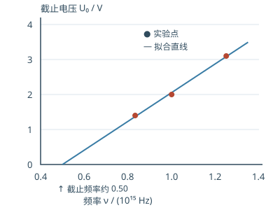

第十六章教材习题逐题讲解
按题号查看目录 （点击展开）
本页对应教材第 257—258 页的 20 题。本轮已逐题目视对照扫描题面，重新推导并独立计算有关数值；先列条件和规律再核对下面解答。没有见到出版社答案，以下均为独立整理，不能称为官方答案核对。近似数值可能因常数取值略有差别。
常用常数：h＝6.626×10⁻³⁴ J·s，c＝3.00×10⁸ m/s，e＝1.602×10⁻¹⁹ C，hc≈1240 eV·nm，电子静能 mₑc²≈0.511 MeV，电子康普顿波长 h/(mₑc)≈0.002426 nm。
16-1 黑体一定是黑色的吗
（1）不一定呈黑色。“绝对黑体”指任何波长的入射辐射都被完全吸收，与温度高时自己发出的可见光颜色是两回事。低温时可见辐射很弱，高温时可呈红、黄、白色。
（2）若“辐射本质”指机制，均为与温度有关的热辐射；若指辐射谱是否完全相同，则必须限定温度：同温的理想黑体单位面积光谱相同，不同温度的谱形、峰值和总辐出度不同。总辐出度 M＝σT⁴，不能从“都是黑体”推出任意温度下辐射量相同；总功率还要乘表面积。
16-2 根据峰值波长估计温度
题设：将太阳、北极星、天狼星近似为黑体，按波长表示的谱峰分别为 0.47、0.35、0.29 μm。用 维恩位移定律 λₘT＝2.898×10⁻³ m·K。
先换单位 1 μm＝10⁻⁶ m，再算 T＝2.898×10⁻³/λₘ。例如太阳 T＝2.898×10⁻³/(0.47×10⁻⁶)≈6.17×10³ K。同样得到北极星约 8.28×10³ K、天狼星约 9.99×10³ K。峰值越短温度越高，结果次序合理。这是按给定数据和黑体模型估算，并非核验真实恒星的最新参数；不能把频率谱峰换算后直接当作波长谱峰。
16-3 太阳辐射与质量亏损
题设：T＝5700 K，直径 D＝1.4×10⁹ m，静质量 M＝2.0×10³⁰ kg。先按黑体计算辐射总功率，再用质能关系求质量减少的速率。
- 半径 R＝D/2＝0.7×10⁹ m；发光表面积为 4πR²，不是截面积 πR²。
- P＝4πR²σT⁴≈3.69×10²⁶ W，其中 σ≈5.6704×10⁻⁸ W/(m²·K⁴)。
- 每秒质量减少的大小 P/c²≈4.10×10⁹ kg/s；若写质量变化率，dM/dt＝−P/c²。
- 减少 1% 对应 ΔM＝0.01M＝2.0×10²⁸ kg。恒速估算 t＝ΔM/(P/c²)≈4.88×10¹⁸ s≈1.55×10¹¹ 年，按一年约 3.156×10⁷ s 换算。
结果检查：W/c² 的单位是 kg/s。这是题设恒功率下的估算，长期演化中温度、半径及功率会变，不能当真实太阳寿命。
16-4 辐出度增加
题设：黑体谱峰波长由 0.69 μm 变为 0.50 μm，求总辐出度增加倍数。由 λₘT＝常数，T₂/T₁＝0.69/0.50＝1.38。
M₂/M₁＝(T₂/T₁)⁴＝1.38⁴＝3.6267；
(M₂−M₁)/M₁＝2.6267。
因此末值是原来的约 3.63 倍，增加量为原来的约 2.63 倍（263%）。写清比值即可避免“增加了几倍”的口径混淆。波长缩短对应升温，总辐出度应增大。
16-5 光电子速度为什么不一样
（1）单色光每个光子的能量 hν 相同，但金属内电子原有能量、所在位置、逸出前碰撞损失不同，所以逸出速度分散。Kₘₐₓ＝hν−W 只描述最有利条件下的最大动能，不表示所有电子都获得同一动能。
（2）气体原子内电子也受束缚。给定初态的单光子电离存在阈值，近似为 hν₀＝该初态电离能；严格计算还涉及离子反冲。激发态和基态的阈值不同。多光子过程不在本题的单光子模型内。
16-6 截止电压作图
题设数据：截止电压取阻止电子到达收集极所需电压的大小。作 U₀ 对 ν 的图，不能把 U₀ 对 λ 的曲线斜率认作 h/e。
| λ / nm | ν / (10¹⁵ Hz) | U₀ / V |
|---|---|---|
| 360 | 0.8333 | 1.40 |
| 300 | 1.0000 | 2.00 |
| 240 | 1.2500 | 3.10 |
取 c≈3.00×10⁸ m/s，由 ν＝c/λ 得表中频率。爱因斯坦方程 eU₀＝hν−W 给直线 U₀＝(h/e)ν−W/e：斜率是 h/e，纵截距是 −W/e。
三个数据点不严格共线。令 x＝ν/(10¹⁵ Hz)，用直线 U₀＝ax＋b 近似拟合；可由 a＝Σ[(x−x̄)(U−Ū)]/Σ(x−x̄)² 算得 a≈4.1053 V、b≈−2.0526 V。手工作图应让直线总体接近三点，不必强迫穿过每一点。
U₀≈(4.11×10⁻¹⁵ V·s)ν−2.05 V。
- h/e≈4.11×10⁻¹⁵ V·s，斜率的单位要把横轴中的 10¹⁵ 还原。
- W/e≈2.05 V，故 W≈2.05 eV≈3.29×10⁻¹⁹ J；2.05 V 是电压，2.05 eV 才是能量。
- 令 U₀＝0，得 ν₀≈5.00×10¹⁴ Hz。用 W/h 也应得同一值。

拟合在三点处的电压误差约为 +0.032、−0.053、+0.021 V（数据减拟合值），说明只是近似测定，不能据此报出许多位“精确常数”。
16-7 磁场测最大动能
题设：λ＝350 nm，最大能量光电子在 B＝1.5×10⁻⁵ T 中形成半径 r＝0.18 m 的圆轨道。按速度垂直于匀强磁场、没有额外电场加速处理；磁力不做功，磁场只用于测动量。
- 向心力关系 evB＝pv/r 给 p＝eBr，e 取电荷量大小。
- 低速动能 Kₘₐₓ＝p²/(2mₑ)≈1.027×10⁻¹⁹ J≈0.641 eV。反算 v/c≈0.00158，非相对论处理足够。
- 光子能量 hc/λ≈1239.84/350 eV≈3.5424 eV，故 W＝hc/λ−Kₘₐₓ≈2.90 eV≈4.65×10⁻¹⁹ J。
检查 W 为正且小于入射光子能量。若电子螺旋运动，r 只给垂直动量，不能直接由它确定总动能。
16-8 两种光的速度比
题设：λ₁＝350 nm、λ₂＝540 nm，最大速度比 v₁/v₂＝2.0。短波光能量更大，因此 v₁ 是较大速度。两次使用同一金属，逸出功相同。
在低速近似下 K₁/K₂＝(v₁/v₂)²＝4。分别写 E₁−W＝K₁、E₂−W＝K₂，消去动能：
E₁−W＝4(E₂−W)，
W＝(4E₂−E₁)/3＝(hc/3)(4/λ₂−1/λ₁)。
用 hc≈1239.84 eV·nm，保留中间位数，算得 W≈1.8805 eV≈3.01×10⁻¹⁹ J。不是把速度比直接当动能比；结果小于 E₂≈2.296 eV，两种光都能逸出，符合题设。
16-9 光子的能量与动量
（1）题目采用历史上的氪-86橙黄色谱线定义：1 m＝1650763.73λ。所以 λ＝1/1650763.73 m≈605.780 nm，不是把这个倍数再乘 1 m。由 E＝hc/λ 得 3.279×10⁻¹⁹ J≈2.047 eV。这里只按教材历史题设换算。
（2）光子能量等于电子静能 Eγ＝mₑc²≈0.511 MeV，并不是说光子具有电子的静质量。由光子关系分别得：
- ν＝Eγ/h≈1.24×10²⁰ Hz；
- λ＝hc/Eγ＝h/(mₑc)≈2.43×10⁻¹² m；
- p＝Eγ/c＝mₑc≈2.73×10⁻²² kg·m/s。
按教材常见能区划分属于 γ 射线范围；X 射线与 γ 射线也常按产生机制命名，不能仅靠这个能量唯一判断来源。检查 νλ＝c、pλ＝h。
16-10 同动量的光子和电子
题设：光子与动能 K＝3 MeV 的电子动量大小相同。此时电子已明显相对论化，不能用 p＝√(2mₑK)。先写电子总能量 Eₑ＝K＋mₑc²。
Eₑ²＝(pc)²＋(mₑc²)²
⇒ (pc)²＝K²＋2Kmₑc²。
光子满足 Eγ＝pc，因此 Eγ＝√[K(K＋2mₑc²)]＝√[3(3＋1.022)] MeV≈3.47 MeV。各能量都用 MeV 代入，开方后仍为 MeV；相同动量并不意味着不同静质量粒子的总能量相同。
16-11 光电效应与康普顿散射
光电效应：物质中的束缚电子吸收光子后逸出，原光子消失；能量需扣除逸出功或束缚能，物质其余部分也参与动量平衡。不能当成孤立自由电子独自完全吸收光子。
康普顿散射：在教材近似中，光子与初始静止的自由电子碰撞，末态仍有光子，光子方向改变且一般能量降低，电子反冲。若用固体靶，是光子能量足够大时把束缚电子近似自由。两种过程都守恒能量和动量，但初末态、适用模型不同，不能混用光电方程与康普顿公式。
16-12 90° 康普顿散射
题设：λ＝0.04 nm，光子散射角 θ＝90°。初始静止自由电子模型给 Δλ＝λC(1−cosθ)，λC＝h/(mₑc)≈0.0024263 nm。
cos90°＝0，故 Δλ＝0.0024263 nm，λ′≈0.0424263 nm。相对入射波长的变化比例为 Δλ/λ×100%≈6.07%。分母是原波长；结果为正，散射后能量降低。
16-13 反冲电子能量
题设：入射光子 E＝0.60 MeV，波长增加 20%。按初始电子静止处理：λ′＝1.2λ，E′/E＝λ/λ′，所以 E′＝0.60/1.2＝0.50 MeV。不能把能量也直接减少 20%。
总能量守恒 E＋mₑc²＝E′＋mₑc²＋K，得反冲电子动能 K＝0.10 MeV。扫描题干只写“电子的能量”，未明确动能还是总能量；若求总能量，则是 0.10＋0.511＝0.611 MeV。这里明确给出两种口径。
16-14 已知电子速度求散射角
题设：入射 λ＝0.003 nm，初始静止电子反冲速度 v＝0.6c。先由电子速度算获得的动能，再由能量守恒算末光子，最后由康普顿公式反求光子散射角。
- γ＝1/√(1−0.6²)＝1.25，K＝(γ−1)mₑc²≈0.12775 MeV。v＝0.6c 不能用 mv²/2。
- E＝hc/λ≈0.413281 MeV，E′＝E−K≈0.285531 MeV，故 λ′＝hc/E′≈0.004342 nm。
- cosθ＝1−(λ′−λ)/λC≈0.44680，得 θ≈63.46°≈63.5°。
θ 是光子的散射角，不是电子反冲角。检查 E′＞0、−1≤cosθ≤1，且 Δλ≈0.001342 nm 在 0 到 2λC 之间；这些条件可查出单位换错或把静能误当动能的问题。
16-15 可见光能否电离 n＝2 的氢
题设：氢原子处于第一激发态 n＝2。取 Eₙ＝−13.6/n² eV，电离极限 E∞＝0，则所需能量为 E∞−E₂＝3.40 eV。
单光子电离要求 hc/λ≥3.40 eV，即 λ≤1239.84/3.40 nm≈365 nm，为紫外。通常可见光能量不足，所以不能单光子直接电离此初态。这里不讨论先吸收至更高态再继续吸收，或多光子过程；不能把 n＝2 的阈值仍写成基态的 13.6 eV。
16-16 从 n＝5 跃迁到 n＝2
题设：氢由 n＝5 跃迁至 n＝2。末态更低，发出光子；能量取“初态减末态”，保证为正：
Eγ＝E₅−E₂＝13.6(1/2²−1/5²) eV＝2.856 eV。
λ＝hc/Eγ≈1239.84/2.856 nm≈434 nm，属于巴耳末系可见光谱线。也可用 1/λ＝R(1/2²−1/5²) 交叉求解，常数精度应保持一致。
16-17 玻尔轨道的磁场
题设：按第一玻尔圆轨道求原子中心磁场。使用该模型的 r≈5.29×10⁻¹¹ m、v≈2.19×10⁶ m/s。绕行周期 T＝2πr/v，一个周期通过固定截面的电荷量大小为 e。
I＝e/T＝ev/(2πr)≈1.06×10⁻³ A；
B＝μ₀I/(2r)＝μ₀ev/(4πr²)≈12.5 T。
方向判断：等效常规电流方向与电子运动相反，再按电流环右手定则判 B；例如电子从纸面看逆时针，电流顺时针，圆心 B 指入纸面。没有给定绕行方向时只能这样作条件判断。这个结果是玻尔轨道模型估算，现代量子态不能理解为电子沿确定小圆运行。
16-18 可以出现多少条谱线
扫描题干“激发到第 n 能级的原子氢能发出几条光谱线”未明说是一批原子还是单个原子。教材的组合计数按大量原子、可能经过不同中间态来理解。
在只按主能级差计数、不细分精细结构的基础模型中，向 n−1 发射有 1 种来源配对，向 n−2 有 2 种，依次累计，或按每个初态 j 向下有 j−1 种：
N＝Σ(j−1)，j＝2,…,n＝1＋2＋…＋(n−1)＝n(n−1)/2。
这是通常题解中各能级对可能跃迁的计数。实际观测是否出现所有线，还受状态占据、跃迁选择和分辨能力影响；若不同能级差巧合相等，也不能当两条不同频率计。单个原子的一次向下级联最多发 n−1 个光子；若只问从 n 直接向下跳一次，可选末能级有 n−1 个，但每次只发一个光子。例如 n＝3，大量样本可有 3→2、3→1、2→1 三种，单次级联最多两个光子。
16-19 n＝3 态和红外光
题设：氢原子初态 n＝3，分别问能否发射、吸收一个红外光子。
向下只有 3→2 和 3→1：能量分别为 13.6(1/4−1/9)≈1.889 eV、13.6(1−1/9)≈12.089 eV；波长约 656 nm（可见红光）、102.6 nm（紫外）。所以从 n＝3 直接向下的这两条线均不是红外。
吸收可向上：例如 3→4，ΔE＝13.6(1/9−1/16)≈0.6611 eV，对应 λ≈1875 nm，是红外。故可以吸收匹配能级差的红外光子，不能说任意红外频率都能产生该跃迁。这里已用一个允许的能级差说明“可以”，不需假定所有红外都被吸收。
16-20 发射莱曼第一线时原子反冲
题设：初始静止氢原子发射莱曼系第一线（2→1），原子质量取 M＝1.008 u≈1.674×10⁻²⁷ kg。忽略反冲的跃迁能 ΔE＝13.6(1−1/4)＝10.2 eV≈1.634×10⁻¹⁸ J。
动量守恒给原子与光子动量大小相同、方向相反：Mv≈pγ＝Eγ/c。先以 Eγ≈ΔE 算微小反冲，得 v≈ΔE/(Mc)≈3.26 m/s，方向与光子相反。
原子反冲也消耗能量，因此不能同时要求“光子拿走全部 ΔE”和“原子获得正动能”。能量平衡为 ΔE＝Eγ＋K反冲，低速下：
K反冲≈pγ²/(2M)≈(ΔE)²/(2Mc²)；
Eγ≈ΔE[1−ΔE/(2Mc²)]。
令 λ₀＝hc/ΔE 表示忽略反冲的波长，λ＝hc/Eγ 为考虑反冲的波长，则 λ/λ₀＝ΔE/Eγ。小量展开得：
(λ−λ₀)/λ₀≈K反冲/ΔE≈ΔE/(2Mc²)≈5.43×10⁻⁹。
检查：反冲速度远小于 c，低速近似自洽；波长增加，因为光子能量减小。这个比例不是直接取 v/c，后者约为它的 2 倍；比较对象是同一次跃迁考虑与忽略反冲的波长，不是另换观察者的多普勒频移。
做完后的自检
- 黑体题：用的是单位面积辐出度还是总功率？谱峰是按波长还是频率定义？
- 光电题：截止电压、逸出功和最大动能是否混了单位？最大速度比是否先平方？
- 散射题：电子初态是否静止？总能量是否含静能？光子散射角和电子角是否混淆？
- 原子题：跃迁能量正负、初态电离阈值、单原子光子数与样本谱线数能否分清？
自测：16-14 为什么不能用低速动能，16-20 却可以？
前者 v＝0.6c，相对论修正不可忽略；后者约 3.26 m/s，v/c 约 10⁻⁸，低速动能近似足够。先看速度或 K/(mc²)，再选公式。
复习与参考
先区分黑体辐射的整体规律、单个光子的能量动量、电子的相对论动能，再判断原子跃迁是向上吸收还是向下发射。OpenStax：光电效应、OpenStax：康普顿散射、OpenStax：玻尔模型可用于查阅原理。